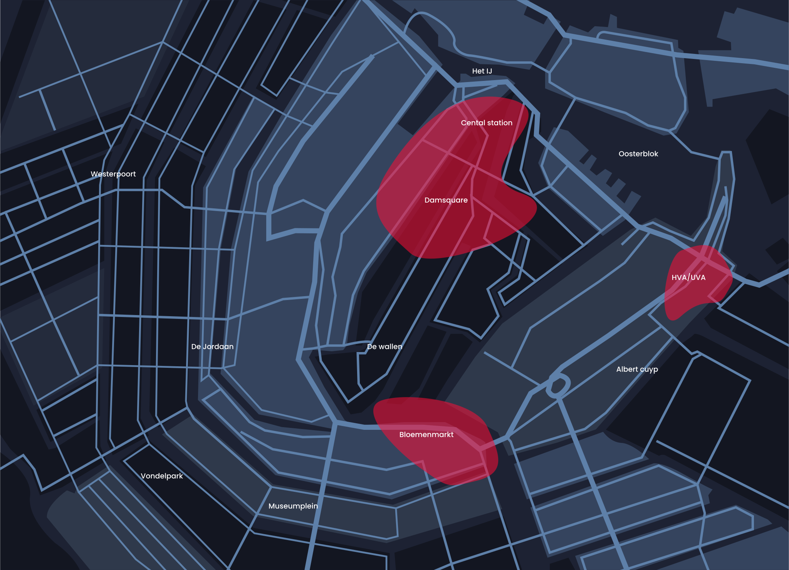

Quest
A revolution
When the second world war ended, a lot of Asian-heritage people came to A’dam searching for a new home...
Enter gameWhen the second world war ended, a lot of Asian-heritage people came to A’dam searching for a new home...
Enter game